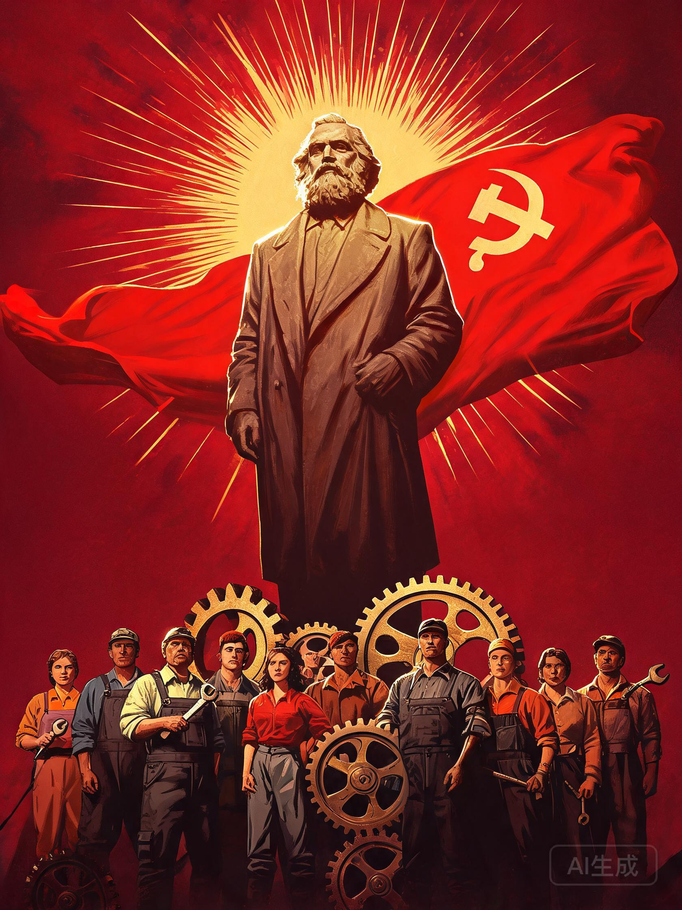
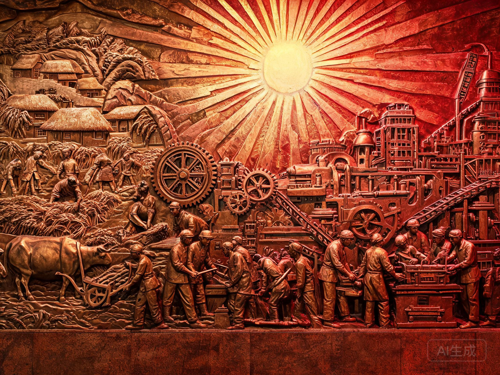
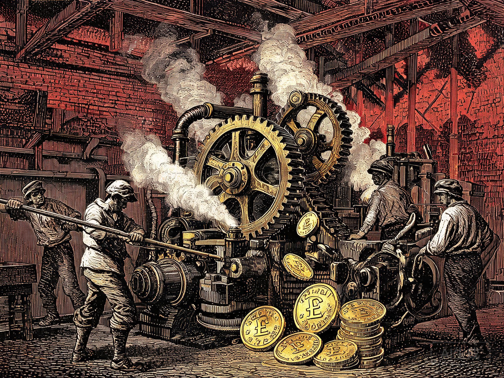
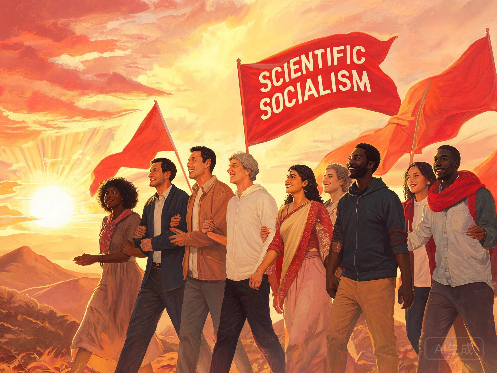

马克思主义是关于无产阶级和人类解放的科学,由马克思主义哲学、马克思主义政治经济学和科学社会主义三个部分组成,是认识世界、改造世界的强大思想武器。
“哲学家们只是用不同的方式解释世界,而问题在于改变世界。” —— 马克思《关于费尔巴哈的提纲》

马克思主义由马克思、恩格斯创立并为后继者不断发展的科学理论体系,包含三个相互联系、不可分割的组成部分。
即辩证唯物主义和历史唯物主义,是马克思主义的世界观和方法论基础,为整个理论体系提供了科学的思想方法,揭示了自然、社会和思维发展的一般规律。
运用辩证唯物主义研究社会生产关系,通过劳动价值论和剩余价值学说,揭示了资本主义生产方式的本质及其产生、发展和灭亡的历史趋势。
是马克思主义的理论归宿和核心结论,阐明了无产阶级解放的条件和发展规律,论证了社会主义代替资本主义的历史必然性,指明了实现共产主义的光明道路。
世界的真正统一性在于它的物质性;事物在对立统一中运动、变化、发展。
辩证唯物主义认为,世界是物质的,物质决定意识,意识对物质具有能动的反作用。万事万物处于普遍联系和永恒发展之中,发展的根本原因在于事物内部的矛盾运动。
实践是认识的基础:实践是认识的来源、认识发展的动力、检验认识真理性的唯一标准,也是认识的目的。认识运动是一个“实践—认识—再实践—再认识”,循环往复以至无穷的辩证发展过程。

社会存在决定社会意识。生产力与生产关系、经济基础与上层建筑的矛盾运动,是推动社会形态更替的基本动力。人民群众是历史的创造者,是社会物质财富和精神财富的创造者,是社会变革的决定力量。
以《资本论》为丰碑,科学揭示资本主义经济制度的内在矛盾与运行规律。

商品具有使用价值和价值二因素,价值由抽象劳动创造,商品的价值量由社会必要劳动时间决定。货币转化为资本的关键,是劳动力成为商品。
剩余价值由雇佣工人的剩余劳动创造、被资本家无偿占有,这是资本主义剥削的秘密所在,也是马克思主义经济理论的基石。
把马克思主义基本原理同中国具体实际相结合、同中华优秀传统文化相结合。
中国共产党为什么能,中国特色社会主义为什么好,归根到底是马克思主义行,是中国化时代化的马克思主义行。
把马克思列宁主义基本原理同中国革命具体实际相结合,开辟了农村包围城市、武装夺取政权的正确道路,指引中国革命取得胜利。
包括邓小平理论、“三个代表”重要思想、科学发展观,科学回答了什么是社会主义、怎样建设社会主义等一系列基本问题。
立足新时代伟大实践,系统回答了新时代坚持和发展中国特色社会主义的重大时代课题,是党和国家必须长期坚持的指导思想。
“代替那存在着阶级和阶级对立的资产阶级旧社会的,将是这样一个联合体,在那里,每个人的自由发展是一切人的自由发展的条件。”—— 马克思、恩格斯《共产党宣言》
马克思主义并没有结束真理,而是开辟了通向真理的道路。新时代青年应当自觉学习马克思主义基本原理,掌握科学的世界观和方法论,坚定理想信念,在实现中华民族伟大复兴的历史进程中书写人生华章。
科学社会主义 · 通向人类解放之路
社会主义从空想到科学、从理论到实践、从一国到多国的伟大飞跃。
从空想到科学
From Utopia to Science唯物史观和剩余价值学说两大发现,使社会主义由空想变为科学。1848年《共产党宣言》的发表,标志着科学社会主义的诞生,也标志着马克思主义的公开问世。
共产主义社会将实现人的自由而全面的发展:“在那里,每个人的自由发展是一切人的自由发展的条件。”

《共产党宣言》发表
马克思、恩格斯为共产主义者同盟起草的纲领发表,系统阐述科学社会主义基本原理,标志着马克思主义的诞生。
《资本论》第一卷出版
系统阐述剩余价值理论,深刻揭示资本主义经济运动规律,被誉为“工人阶级的圣经”。
十月革命胜利
俄国十月革命建立世界上第一个社会主义国家,社会主义从理论变为现实,开辟了人类历史新纪元。
中华人民共和国成立
中国人民站起来了,社会主义制度随后在古老东方大国确立,深刻改变了世界政治格局。
马克思主义中国化时代化新飞跃
习近平新时代中国特色社会主义思想,是当代中国马克思主义、二十一世纪马克思主义,实现了新的飞跃。